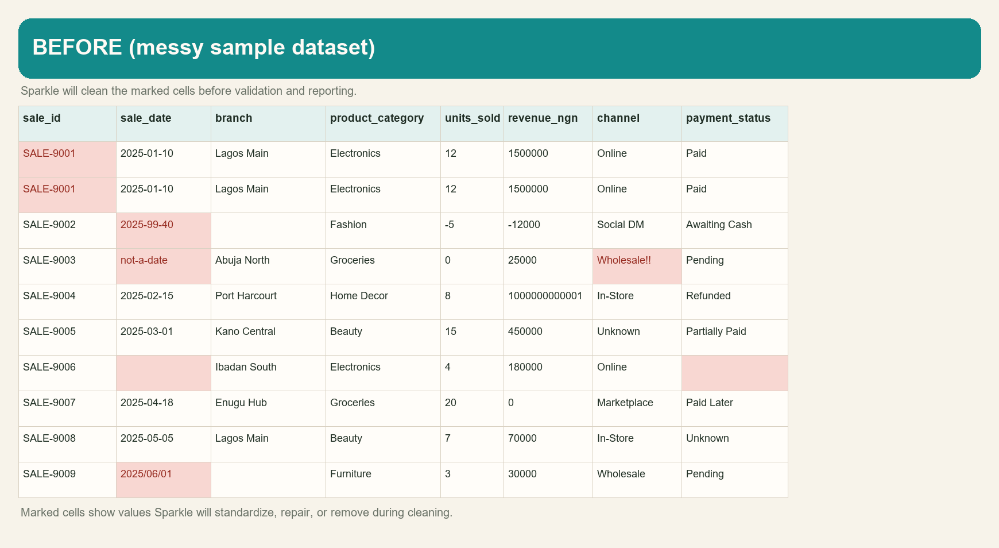
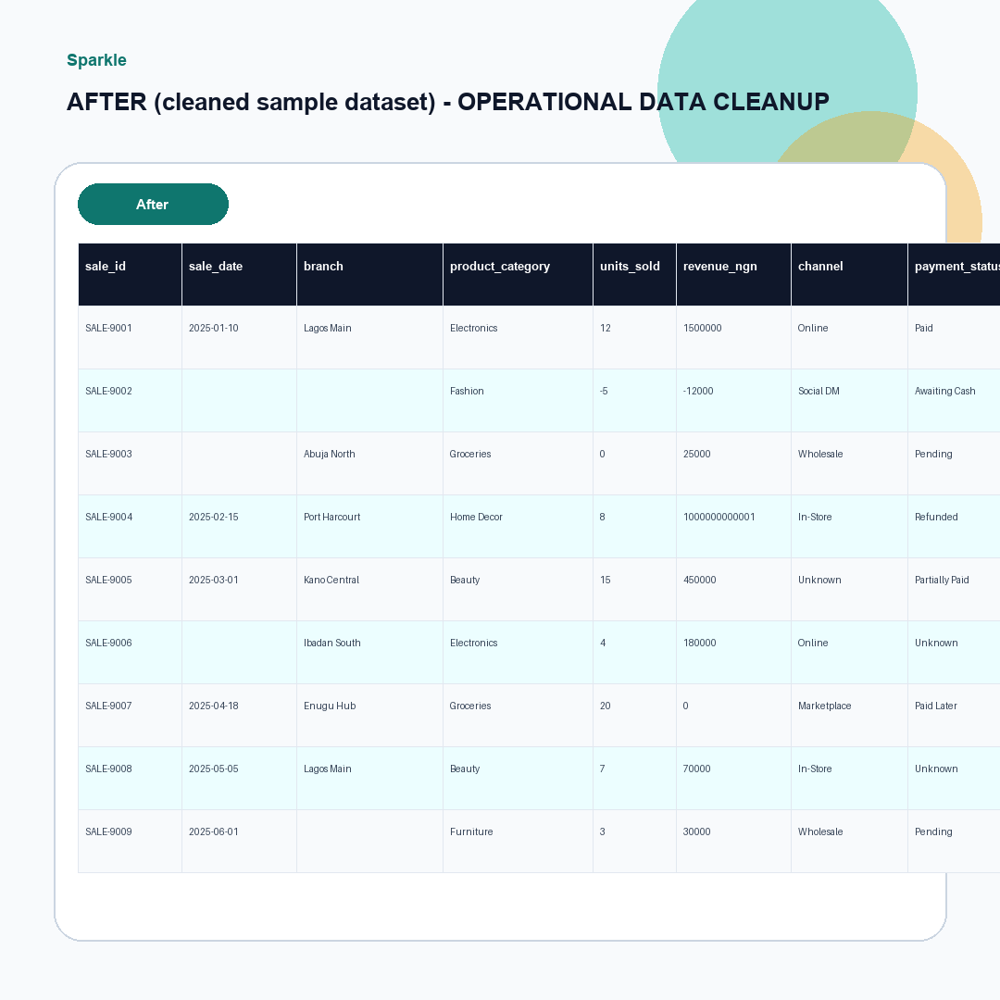
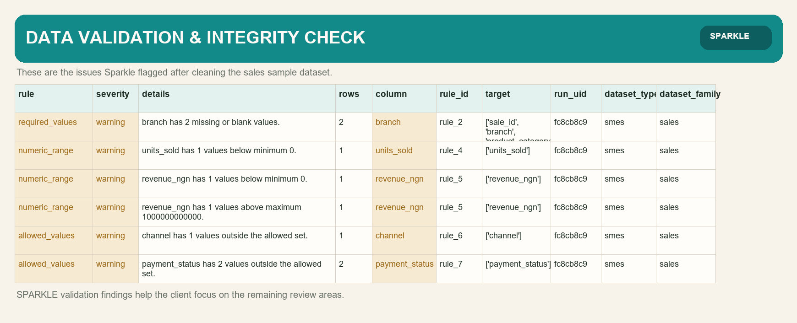
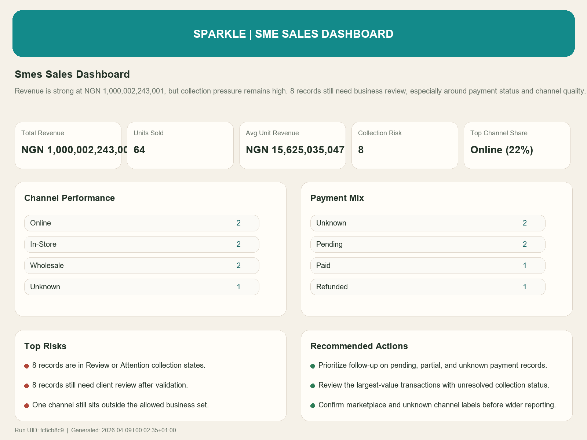

Operational Data Cleanup
Fixes whitespace, dates, identifiers, mapped values, and duplicate-heavy rows without inventing data.
Sparkle cleans inconsistent records, flags integrity risk, enriches business meaning, and structures delivery-grade datasets and dashboards for real business use.
Sparkle is designed as a connected operational journey, not a loose collection of scripts. Each stage moves the dataset closer to a business-ready outcome.
Fixes whitespace, dates, identifiers, mapped values, and duplicate-heavy rows without inventing data.
Flags errors, warnings, and review-needed records so weak inputs do not quietly pass into reporting.
Adds derived fields and mapped labels that make the dataset more valuable for business analysis.
Shapes the final dataset and reporting outputs so delivery is coherent, traceable, and reusable.
These examples show how Sparkle turns a messy sample sales dataset into cleaner, more usable business outputs.




Sparkle is designed around traceability, controlled delivery, and truthful outputs instead of decorative automation.
Operational and business dashboards are driven by real run evidence, not fabricated examples.
Shared run identity keeps cleaning, validation, enrichment, structuring, reporting, and delivery connected.
Family and sector reporting are gated deliberately so final client artifacts appear only when the journey is ready.
Cleanup, validation, enrichment, and structuring should produce outputs a team can trust, explain, and act on.